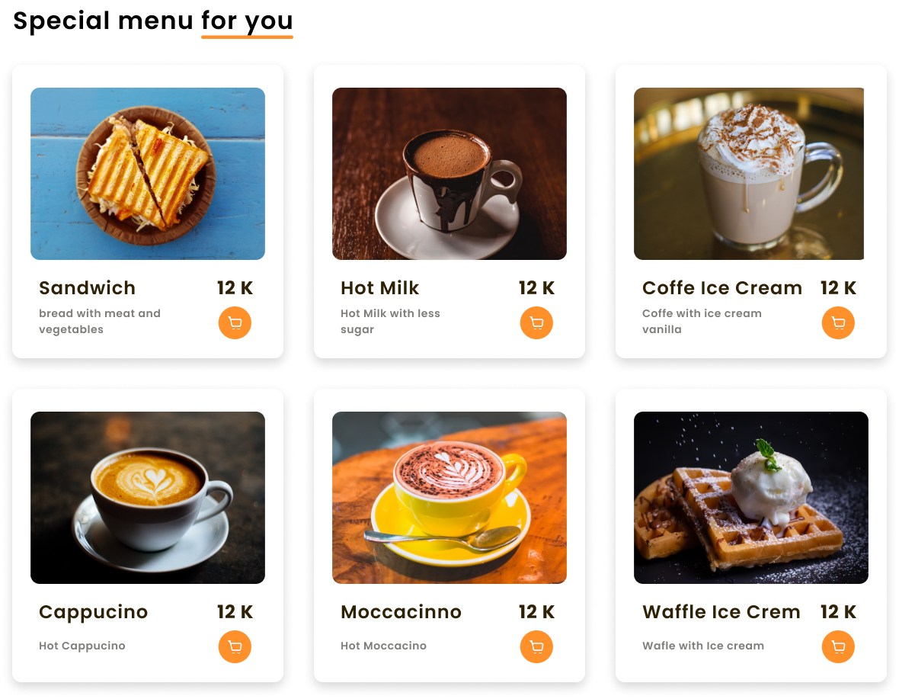
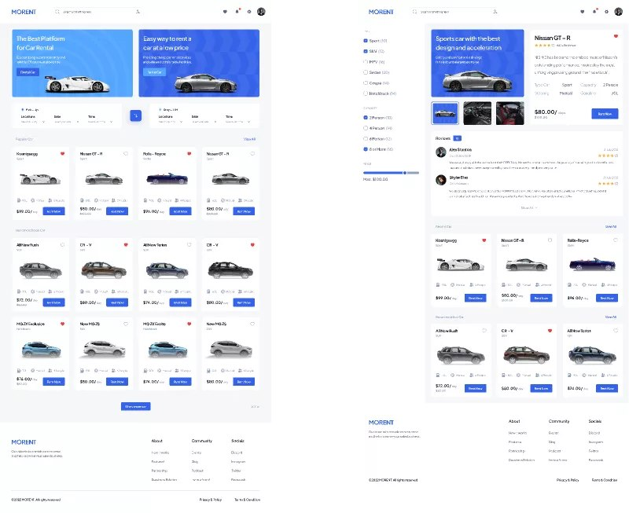

Figma
HTML
CSS
Yumshoq soyalar bilan bezatilgan
minimalistik musiqa pleyeri dizayni.

Vazifalar
Milliy taomlar
mu mani birinchi loyiham bu layhani yasash uchun 2-3 kun sarflaganman

Loyiham
index.html & style css
bu mani loyiham men buni 2 ki 3 haftadan beri yasab kelmoqdaman